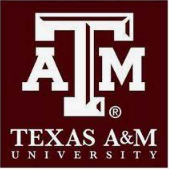
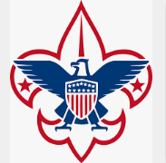
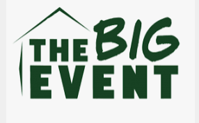

Texas A&M ENGR 102 Teaching Assistant (2022)
I am currently a teaching assistant for incoming engineering students. My role
as a teaching assistant is create additional learning material for the engineering students
to follow if they have questions from the lecture. I also go around the class, and have office hours
to help the students grasp technical concepts that are being taught. Click on the image for more information.

Boy Scouts of America, Troop 840 (2013-2020)
In my time at Boy Scouts, I learned a lot of life skills that I still implement today in my life.
Through Boy Scouts. I learned how to cook, save money, swim, and how to react in emergency situations.
Through Boy Scouts, I have been able to volunteer in soup kitchen, sell popcorn for non-profit organizations,
and set up fundraisers to help the local community. For my Eagle Scout project, I helped out the local
Dallas-Fort Worth Temple in building and painting picnic tables for them. This allowed the temple to host an
additional 80 people being able to sit down for religious events. Click on the image to learn more about my troop and
Boy Scouts.

Big Event in College Station (2021-Present)
Every year since 2021, I have taken part of the annual Big Event in College Station. The purpose of the event is
to give back to the local College Station community. Last semester, I had the chance to clean up and redo an elderly couple's
garden. I will continue to be involved in Big Event, as I will volunteer for the event next year. Click on the image below to learn
more about Big Event.
